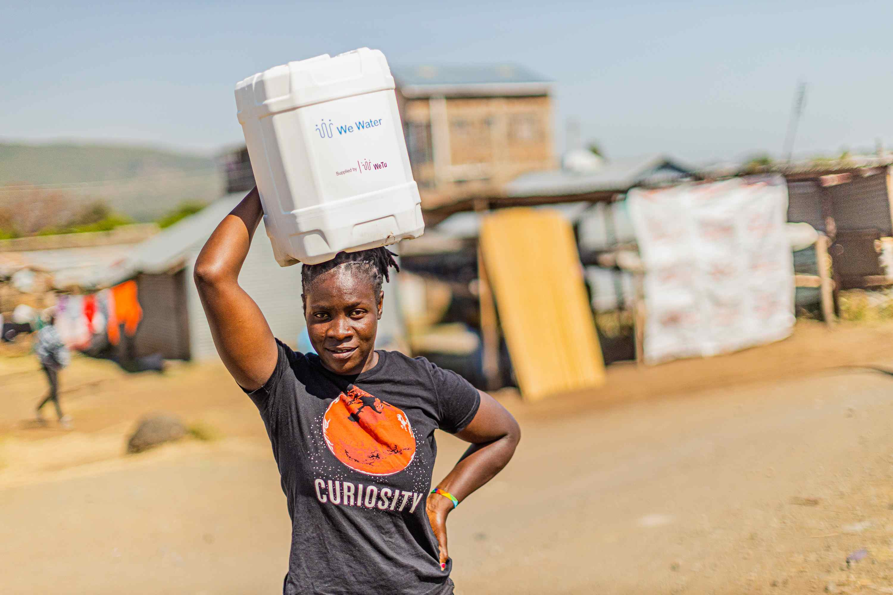
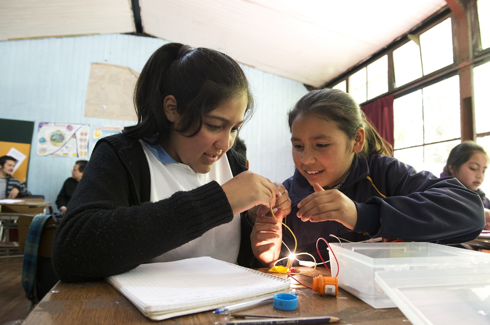
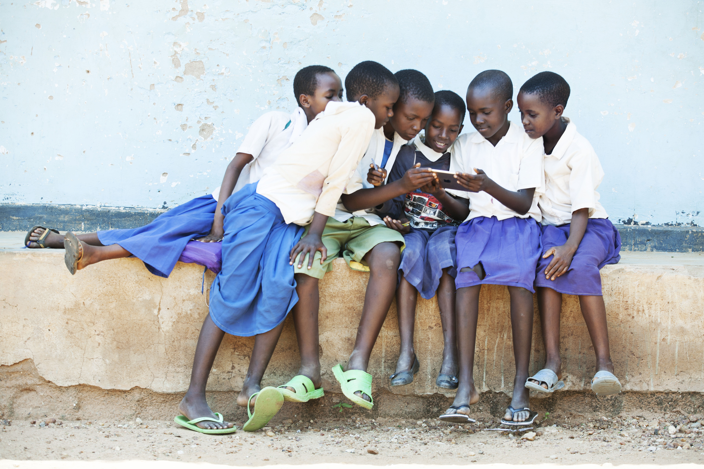

Wir stärken Menschen und Organisationen, die bestehende Versorgungssysteme in Krisen und Konflikten verbessern. Denn gesicherte Lebensgrundlagen sind Vorraussetzung für Entwicklung.


Vernetzte Gesellschaften
Wir verstärken Newtzwerke für innovatives und inklusives Lernen und Wissensaustausch. Weil nachhaltige Entwicklung nur gelingt, wenn alle gleichberechtigt teilhaben.

Klima und Nachhaltigkeit
Mit sektorübergreifender Zusammenarbeit unterstützen wir die Transformation zu nachhaltigem Handeln. Für einen Gesunden Planeten und eine Lebenswerte Zukunft.
Weltweit haben Menschen den Mut, Neues zu wagen und Ideen für eine bessere Zukunft Wirklichkeit werden zu lassen. Sie wollen wir als gemeinnützige Siemens Stiftung unterstützen – partnerschaftlich, international und wirkungsorientiert.
Gemeinsam mit Kooperationspartner*innen konzipieren und realisieren wir lokale sowie internationale Projekte und unterstützen damit Menschen in Afrika, Lateinamerika und Europa.
Junge Mädchen erforschen lokale Lösungen zur Bekämpfung des Klimawandels
Notiz | Bildung | 24. März 2023
Mitmachen: MINT-Make@thon „Nachhaltige Textilien“
Wie können Textilien ökologischer werden und wie können wir sie gerechter produzieren? Wie können wir Kleidung länger nutzen? Beim Make@thon „Nachhaltige Textilien“ erarbeiten Jugendliche im MINT-Hub Siemensstadt Square Lösungen für die Textilien der Zukunft.
Junge Mädchen erforschen lokale Lösungen zur Bekämpfung des Klimawandels
Pressemitteilung | Kunst & Kultur | 22. März 2023
Music In Africa feiert 10 Jahre – African Music Days Munich im Muffatwerk, 24. und 25. Mai 2023
Acht Bands aus acht afrikanischen Ländern werden auf den Bühnen des Muffatwerks München am 24. und 25. Mai 2023 zu sehen sein. Von Afrobeat und Hip-Hop über futuristischen Punk bis hin zu ganz neuen Klängen und afrikanischer Mystik ist bei diesem Festival alles vertreten.
Junge Mädchen erforschen lokale Lösungen zur Bekämpfung des Klimawandels
Meldung | Bildung | 14. März 2023
Fünf Jahre Forum Bildung Digitalisierung
Anlässlich seines fünften Geburtstages veranstaltete das Forum Bildung Digitalisierung am 15. März einen parlamentarischen Abend in Berlin unter dem Motto „Wie gestalten wir die digitale Bildungswende für eine chancen- und teilhabegerechte Bildung in Deutschland?“
Junge Mädchen erforschen lokale Lösungen zur Bekämpfung des Klimawandels
Blog | Allgemein | 9. März 2023
Wandel, der inspiriert: Wie Bildung, Sozialunternehmertum und Musik Gleichstellung ermöglichen
Die Projekte der Siemens Stiftung in den Bereichen saubere Energie, Musik und Bildung verändern das Leben von Frauen, die an ihnen in Afrika und Lateinamerika teilnehmen nachhaltig. Außerdem sind sie ein direkter Beitrag zu den Zielen für nachhaltige Entwicklung der Vereinten Nationen.